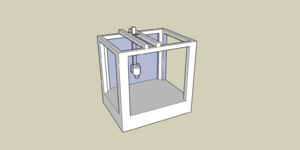
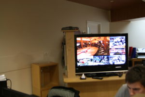
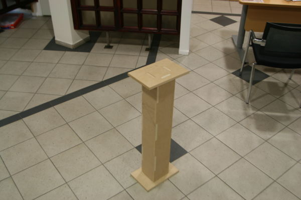

Participant in Fab103, Fab203 and Fab Academy
Fab Academy, Final Project
Robot

assignment 1
rep rap table

similar to rep rap , the table does not move
assinment 2
build hello.serial.45
circuit board
For the first try I broke two drill on the milling machine, but I fynist the curcuit board.
Soldering first I turnd ATTiny45 rong,two I put 1K in stet of 10K three
I solder two legs on ATTiny45 two gether.
Removing ATTiny45 I olmost damist the board. removing 1K I used two solderingiren on its end.
it works....
assignment 3
Make something BIG


Assignment 4
Build Hello.echo.44.MIT